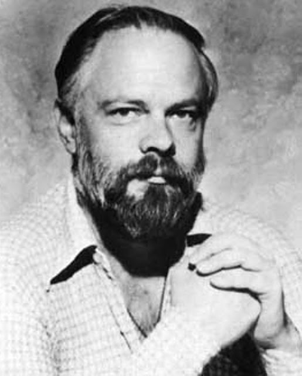
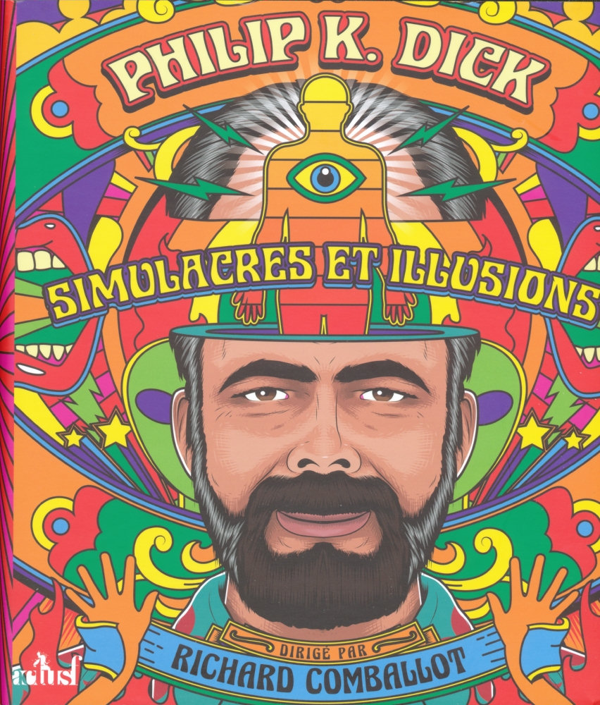

 Philip Kindred Dick, often referred to by his initials PKD, was an American science fiction writer. He wrote 44 novels and about 121 short stories, most of which appeared in science fiction magazines during his lifetime.
His fiction explored varied philosophical and social questions such as the nature of reality, perception, human nature, and identity, and commonly featured characters struggling against elements such as alternate realities, illusory environments, monopolistic corporations, drug abuse, authoritarian governments, and altered states of consciousness. He is considered one of the most important figures in 20th century science fiction.
Born in Chicago, Dick moved to the San Francisco Bay Area with his family at a young age. He began publishing science fiction stories in 1952, at age 23. He found little commercial success until his alternative history novel The Man in the High Castle (1962) earned him acclaim, including a Hugo Award for Best Novel, when he was 33.He followed with science fiction novels such as Do Androids Dream of Electric Sheep? (1968) and Ubik (1969). His 1974 novel Flow My Tears, the Policeman Said won the John W. Campbell Memorial Award for Best Science Fiction Novel.
Following years of drug abuse and a series of mystical experiences in 1974, Dick's work engaged more explicitly with issues of theology, metaphysics, and the nature of reality, as in novels A Scanner Darkly (1977), VALIS (1981), and The Transmigration of Timothy Archer (1982). A collection of his speculative nonfiction writing on these themes was published posthumously as The Exegesis of Philip K. Dick (2011). He died in 1982 in Santa Ana, California, at the age of 53, due to complications from a stroke. Following his death, he became "widely regarded as a master of imaginative, paranoid fiction in the vein of Franz Kafka and Thomas Pynchon".
Dick's posthumous influence has been widespread, extending beyond literary circles into Hollywood filmmaking. Popular films based on his works include Blade Runner (1982), Total Recall (adapted twice: in 1990 and in 2012), Screamers (1995), Minority Report (2002), A Scanner Darkly (2006), The Adjustment Bureau (2011), and Radio Free Albemuth (2010). Beginning in 2015, Amazon Prime Video produced the multi-season television adaptation The Man in the High Castle, based on Dick's 1962 novel; and in 2017 Channel 4 produced the anthology series Electric Dreams, based on various Dick stories. In 2005, Time named Ubik (1969) one of the hundred greatest English-language novels published since 1923. In 2007, Dick became the first science fiction writer included in The Library of America series.
